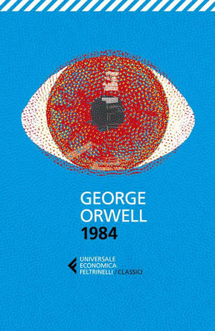

Nell'Oceania, uno stato totalitario retto dal Grande Fratello, ogni pensiero è controllato attraverso sorveglianza costante e manipolazione sistematica della verità. Winston Smith, impiegato del Ministero della Verità incaricato di riscrivere la storia secondo le necessità del regime, comincia a coltivare dubbi pericolosi e un desiderio di libertà che lo porterà a sfidare l'intero sistema. Diventato un simbolo assoluto della letteratura distopica, il romanzo resta oggi più che mai un monito sulla manipolazione dell'informazione e sul controllo del pensiero.
Il romanzo è diviso in tre parti, e devo ammettere che è stato dalla seconda in poi che ha iniziato a coinvolgermi davvero. Quello che mi ha colpita di più è stato il modo in cui, spesso senza alcun preavviso, il testo mi presentava dettagli o situazioni talmente estreme da lasciarmi con un "cosa?!?!" genuino — non un piccolo sussulto passeggero, ma qualcosa che catturava completamente la mia attenzione e mi restava addosso per un po', prima di riuscire a tornare pienamente immersa nella lettura.
Non mi aspettavo assolutamente il finale. Mi ha lasciata scioccata, e devo dire che mi ha lasciato addosso anche un po' di paura — di quelle sensazioni che non svaniscono subito una volta chiuso il libro, ma continuano a ronzarti in testa anche dopo.
"L'eresia delle eresie era il buonsenso. E la più terrificante non era che ti avrebbero ammazzato perchè la pensavi diversamente, ma che magari avevano ragione loro. A dirla tutta, come facciamo davvero a sapere che due più due fa quattro? O che la forza di gravità funziona sul serio? O che il passato non può essere cambiato? Se il passato e il mondo esterno esistono soltanto nella mente, e la mente stessa è controllabile, che cosa ne consegue?"
"Non avrete mai nulla a sostenervi, se non l'idea. Non avrete compagni né incoraggiamento. Quando alla fine vi prenderanno, non riceverete aiuto. Non aiutiamo mai i nostri membri. Al più, quando si rende assolutamente necessario ridurre qualcuno al silenzio, siamo in grado di far entrare di tanto in tanto una lametta nella cella di un prigioniero. Dovrete abituarvi all'idea di vivere senza ottenere risultati e senza speranza. Lavorerete per un po', verrete catturati, confesserete, e poi morirete. Sono gli uni-risultati che vi sarà dato di vedere. Non c'è possibilità di un qualunque cambiamento percepibile nell'arco di tempo della vostra vita. Noi siamo i morti. La nostra vita vera risiede nel futuro. Vi prenderemo parte in forma di cumuli di cenere e frammenti di ossa. Ma quanto sia distante il futuro, questo non ci è dato sapere. Magari mille anni. Al momento nulla è possibile se non estendere il perimetro della sanità mentale poco a poco. Non possiamo agire in maniera collettiva."
"Si dice che il tempo curi ogni cosa.
Si dice che sempre puoi dimenticare.
Ma le lacrime degli anni e i sorrisi
Quelli giammai li potrai scordare."
"Chi controlla il passato controlla il futuro, chi controlla il presente controlla il passato"
"«Lei mi ha ridotto in questo modo!». «No, Winston, ti ci sei ridotto da solo. E' quello che hai accettato quando ti sei messo contro il partito [...]. «Ti abbiamo picchiato, Winston. Ti abbiamo spezzato. L'hai visto il tuo corpo. La tua mente è nello stesso stato. Non penso che in te sia rimasto un briciolo d'orgoglio. Ti hanno preso a calci, ti hanno frustato e insultato, hai strillato di dolore, ti sei rotolato sula pavimento in mezzo al tuo stesso vomito e il tuo stesso sangue. Hai implorat pietà, hai tradito tutti e tutto. Riesci a pensare a una sola forma di degradazione a cui tu non sia stato sottoposto?» «Non ho tradiito Julia.»"